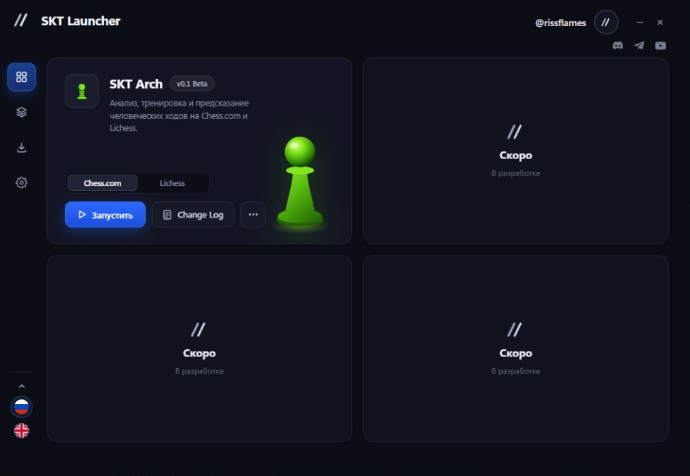

доступно
Chess.com
Подсказки и анализ SKT Arch поверх доски, тренировка дебютов и прогноз ходов соперника.
АнализToby ИИMultiPV
Лаунчер для шахматистов: модификации для Chess.com и Lichess и встроенная бесплатная модель анализа SKT Arch на Stockfish 19 и нейросети Toby. Написан на Rust — работает мгновенно.
Выбери площадку внутри лаунчера и запускай модуль одной кнопкой. Анализ позиций, тренировка и предсказание человеческих ходов прямо во время партии.
Подсказки и анализ SKT Arch поверх доски, тренировка дебютов и прогноз ходов соперника.
Полный набор инструментов для Lichess. Переключение между сервисами — в один клик.
Дополнительные модификации и плагины уже в разработке и появятся с обновлениями лаунчера.
Продвинутая бесплатная модель для шахматного анализа. Stockfish 19 просчитывает глубокую тактику, а нейросеть Toby оценивает человеческую логику и ускоряет поиск сильнейших продолжений.
Точный просчёт вариантов и до 6 линий MultiPV одновременно.
Предсказывает естественные человеческие ходы и ускоряет поиск.
Глубина, потоки, лимит времени, Hash и расчёт на ходу соперника.
Без подписок и ограничений — модель уже в SKT Launcher.
Переключай вкладки, чтобы посмотреть главный экран лаунчера и панель настроек модели Arch 0.1.

Увеличить Увеличить
Увеличить
Ядро лаунчера и интеграция с движком написаны на Rust. Быстрый старт, низкое потребление памяти и плавный интерфейс без фризов во время расчёта.
Нативный код без тяжёлых оболочек — лаунчер открывается и готов к работе за доли секунды.
Stockfish 19 и Toby 2.0 работают параллельно на потоках CPU, не тормозя интерфейс и браузер.
Мгновенный вывод глубины, MultiPV-линий и времени расчёта прямо из движка на Rust.
Бесплатно. Модификации и SKT Arch v0.1 beta уже внутри.
Актуальная сборка доступна в нашем Telegram-боте.